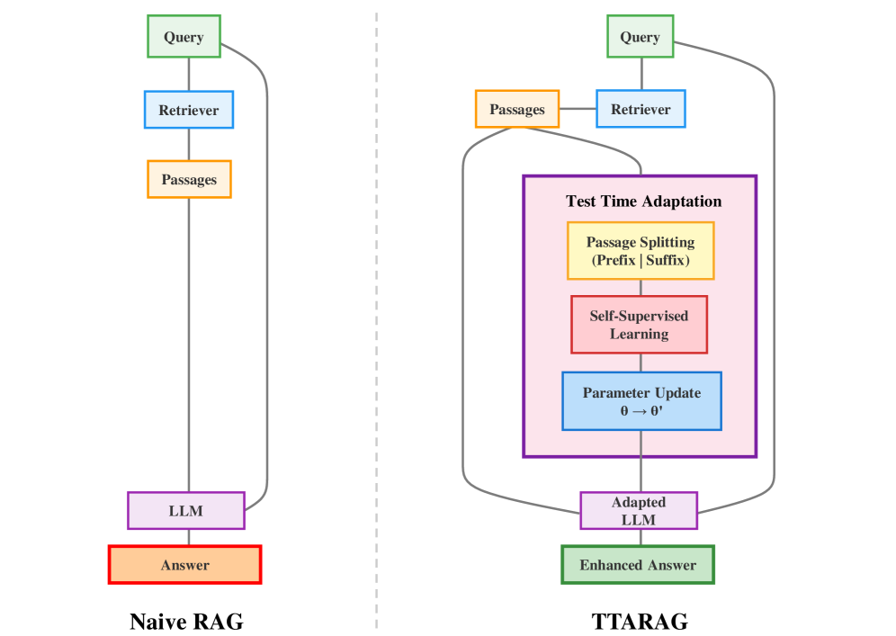
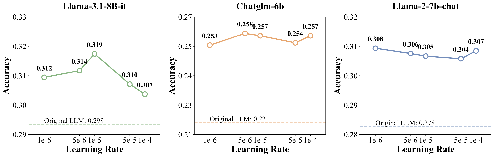
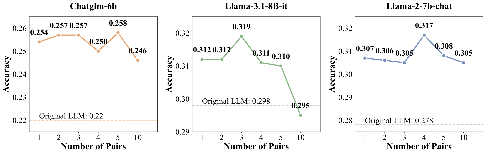

💡 TL;DR
We propose TTARAG — a test-time adaptation method that dynamically updates LLM parameters during inference by learning to predict retrieved content, enabling automatic domain adaptation for RAG systems without any labeled data.
- Problem: RAG systems struggle with distribution shifts in specialized domains (medical, finance, etc.), often failing to utilize domain-specific context effectively
- Self-supervised adaptation: Split retrieved passages into prefix-suffix pairs; train the model to predict suffix from prefix + query, learning domain-specific language patterns
- No labeled data required: Fully unsupervised — adapts using only the retrieved passages available at test time, no source domain access needed
- Consistent improvements: Achieves the best results in 19 out of 24 experimental settings across 6 specialized domains with 3 different model architectures
- Dramatic medical QA gains: Up to +25.0% on PubMedQA, +19.4% on BioASQ — significantly outperforming CoT, ICL, and pretrained RAG models
- Computationally efficient: 40% faster than Chain-of-Thought reasoning while achieving superior performance
🏗️ Framework Overview

⚙️ Methodology
Key insight: By predicting suffix from prefix, the model is encouraged to understand contextual relationships and domain-specific language patterns within retrieved documents, aligning its internal representations with the target domain.
Step 1 — Self-Supervised Adaptation Objective:
- Length Filtering: Passages shorter than a configured minimum length threshold are filtered out to ensure sufficient context for meaningful adaptation
- Passage Splitting: Two-tier strategy — (1) split at natural linguistic boundaries (periods, commas, semicolons); (2) fallback to midpoint division ensuring ≥3 words per segment
- Parameter Update: Reset to pretrained state per query; AdamW optimizer with gradient accumulation over 2 steps and gradient clipping for stable training. Only 3 prefix-suffix pairs needed
Step 2 — Response Generation with adapted $\theta'$:
The adapted model generates the final response using the domain-aligned parameters, leveraging both the retrieved passages and the newly acquired domain knowledge.
📊 Main Results — Accuracy (%)
| Model | Finance | Sports | Music | Movie | Open | Overall | BioASQ | PubMed |
|---|---|---|---|---|---|---|---|---|
| Llama-3.1-8b-it | ||||||||
| naive-rag | 17.4 | 27.6 | 34.9 | 31.3 | 42.4 | 29.8 | 55.6 | 46.6 |
| +CoT | 17.9 | 30.2 | 37.6 | 31.5 | 45.8 | 31.6 | 54.6 | 50.8 |
| +ICL | 16.1 | 24.8 | 33.5 | 29.4 | 40.4 | 28.0 | 49.8 | 53.6 |
| TTARAG | 20.1 | 29.5 | 37.7 | 34.6 | 41.5 | 31.9 | 75.0 | 57.4 |
| Δ vs naive | +2.7 | +1.9 | +2.8 | +3.3 | -0.9 | +2.1 | +19.4 | +10.8 |
| Llama-2-7b-chat | ||||||||
| naive-rag | 14.7 | 23.2 | 36.5 | 30.4 | 39.2 | 27.8 | 54.1 | 47.6 |
| TTARAG | 16.4 | 25.8 | 40.7 | 33.8 | 41.1 | 30.5 | 71.8 | 54.0 |
| Δ vs naive | +1.7 | +2.6 | +4.2 | +3.4 | +1.9 | +2.7 | +17.7 | +6.4 |
| ChatGLM-3-6b | ||||||||
| naive-rag | 9.8 | 18.7 | 31.4 | 22.4 | 33.4 | 22.0 | 51.4 | 19.8 |
| TTARAG | 14.0 | 22.1 | 33.5 | 25.5 | 38.1 | 25.7 | 58.4 | 44.8 |
| Δ vs naive | +4.2 | +3.4 | +2.1 | +3.1 | +4.7 | +3.7 | +7.0 | +25.0 |
🏆 vs. Pretrained RAG Models
All models use Llama-2-7b-chat backbone
| Model | Finance | Sports | Music | Movie | Open | Overall | BioASQ | PubMed |
|---|---|---|---|---|---|---|---|---|
| Naive-RAG | 14.7 | 23.2 | 36.5 | 30.4 | 39.2 | 27.8 | 54.1 | 47.6 |
| Ret-Robust | 14.6 | 20.6 | 33.2 | 32.4 | 33.5 | 26.1 | 24.7 | 28.4 |
| RAAT | 13.4 | 18.1 | 28.6 | 25.2 | 31.7 | 22.7 | 64.9 | 46.6 |
| Self-RAG | 11.4 | 19.8 | 22.5 | 20.9 | 26.7 | 19.8 | 57.1 | 43.4 |
| TTARAG | 16.4 | 25.8 | 40.7 | 33.8 | 41.1 | 30.5 | 71.8 | 54.0 |
🔬 Ablation: Segmentation
Prefix-suffix segmentation consistently outperforms whole-passage next-token prediction:
+1.1%
(Llama-3.1-8b), +0.4% (Llama-2-7b), +0.7% (ChatGLM-3-6b)
- The front-to-back prediction task better aligns with natural language understanding compared to token-by-token prediction
- Higher-capacity models benefit more from structured adaptation (+1.1% for Llama-3.1 vs +0.4% for Llama-2)
📈 Hyperparameter Analysis


⏱️ Computational Efficiency
| Metric | 1 pair | 3 pairs | 5 pairs | CoT | Naive |
|---|---|---|---|---|---|
| Total (s) | 4,740 | 6,621 | 7,023 | 11,688 | 961 |
| Avg (s/query) | 1.75 | 2.45 | 2.60 | 4.32 | 0.36 |
🎯 Conclusion
- TTARAG enables fully unsupervised domain adaptation for RAG at inference time
- Simple prefix-suffix prediction provides effective self-supervised signals — no labeled data needed
- Up to +25% improvement on specialized domains; 40% faster than Chain-of-Thought
- Test-time adaptation is a promising direction for domain-specific RAG systems
📄 Paper: arXiv:2601.11443
📧 Contact: xin.sun@cripic.ia.ac.cn